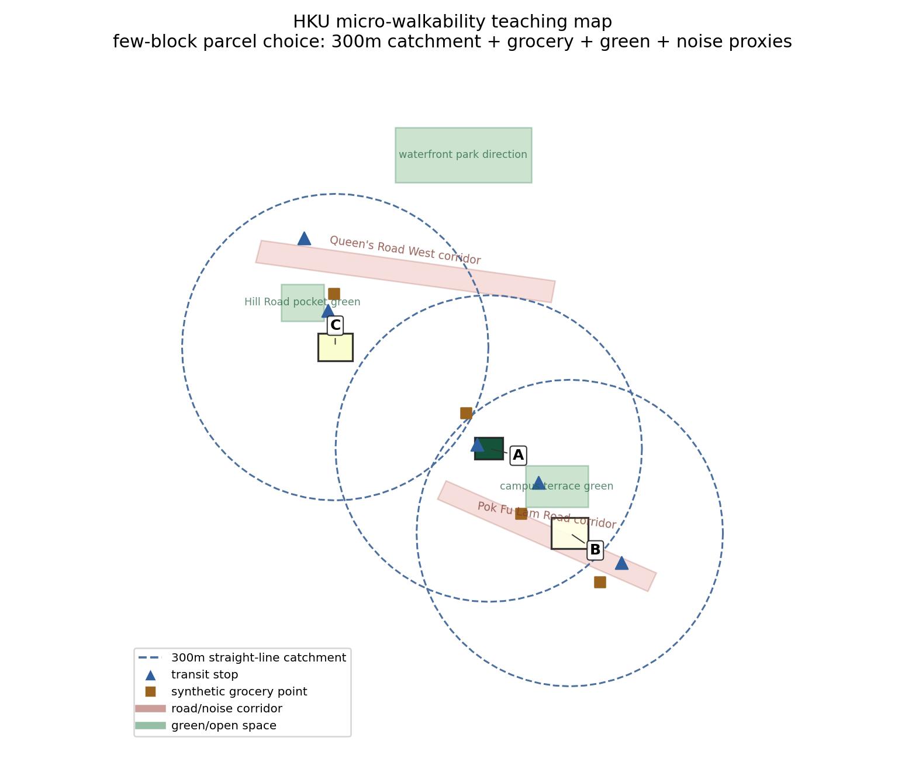

Ultra-zoomed teaching excerpt near HKU with synthetic grocery/convenience points. The buffer is straight-line distance, not a verified walking network.

| site | use | transit | grocery | green % | noise % | score | decision |
|---|---|---|---|---|---|---|---|
| A | HKU station forecourt edge | 2 | 2 | 3.5 | 4.6 | 87.1 | candidate |
| C | Hill Road pocket | 2 | 2 | 2.1 | 6.6 | 80.1 | review assumptions |
| B | main campus edge | 3 | 2 | 3.5 | 6.3 | 79.5 | review assumptions |
python3 gis_spatial_comparison_demo.py. Backend: geopandas. Teaching question: does the 300m catchment measure real access, or just distance on a map?